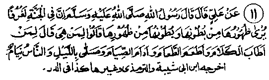
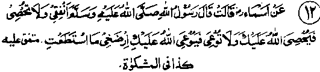

Chapter One · Section (b): Ahadith on the virtues of spending for the cause of Allah
9. The poor will intercede on the Day of Resurrection, etc.

Hadith 11
Muhammad Sallallaho alaihe wasallam has said that there are balconies in Jannah (which appear to be built of glass): everything in them can be seen from outside and the outer scene is clearly visible from inside. The Sahabah Radhiallaho anhum asked as to who will occupy them. Rasulullah Sallallaho alaihe wasallam said, "Those who speak nicely to people, who feed others while themselves they continuously fast and offer Tahajjud Salaat at night when others are asleep."
Note: Abdullah Ibne Salaam Radhiallaho anho says that he had not embraced Islam, when he heard the news that Muhammad Sallallaho alaihe wasallam had migrated to Madinah. He went at once to him and, on seeing his auspicious face, he said to himself that such a blessed countenance could not be that of a liar. When he reached there, the first thing that Rasulullah Sallallaho alaihe wasallam said was, "O people, exchange greetings of Salaam with each other, feed the needy, be kind to the blood-relations and pray during the night when all others are asleep; you will safely and peacefully enter Jannah". (Mishkaat). At No. 34 of the Ayaat quoted earlier, the same subject has been mentioned: that they feed the poor, the orphans and the convicts and say, "We feed you for the sake of Allah, without asking for any return or thanks from you". One Hadith has it that when a person gives his brother food and drink to his satisfaction, Allah Ta'ala creates seven moats between him and Jahannam, each one of which is as wide as the distance to be covered in seven hundred years. (Kanz). Another Hadith says that Allah Ta'ala treats all His creation as a family and whoever provides most benefits to His family is the most loved by Him. (Kanz). Another Hadith says that every good deed counts as Sadaqah, such as meeting a person smilingly or sharing a pail of water with the neighbour. (Kanz). To have a smiling face during conversation, instead of being peevish, is definitely a good deed.
A smiling look towards a brother is by no means a trifle, says a Hadith, while no favour, however small, is to be considered insignificant, and every small good deed amounts to Sadaqah. Similarly, to help some one who has lost his way or to tell someone to do a good act or to restrain him from a bad one, amounts to giving Sadaqah, and the same is the case with removing a thorn or a harmful object from a pathway or to share a pail of water with someone. (Kanz).
A Hadith says that those condemned to go to Jahannam will be drawn up in a line. A dweller of Jannah will pass by, when one of them will ask him to intercede for him with Allah Ta'ala. The Jannati will ask him, "Who are you?" and he will say, "Do you not recognise me? I am the one whom you had once asked for a drink of water, which I had given you". Another Hadith has: Those condemned to go to Jahannam will be drawn-up in a line. When one of the dwellers of Jannah passes by them, one of them will say, "So and so, do you not recognise me? I am the one who gave you a drink of water and gave you water for ablution at such and such time”. (Mishkaat). Still another Hadith has: On the Day of Resurrection, the Jannatis and the Jahannamis will be drawn up in separate lines. A man from among the Jahannamis will see a person standing in the row of the Jannatis and he will remind him of the good turn he had done to him (the Jannati) in his worldly life. At this the Jannati will hold him by the hand, take him into the presence of Allah Ta‘ala, and say, ‘O Allah, I owe this man a good turn!’ Allah Ta'ala will say, "Let him go to Jannah on account of Allah’s infinite mercy towards him!"
Another Hadith says: "Have a frequent contact with the poor and pour favours on them, as they are very rich people." Someone asked Rasulullah Sallallaho alaihe wasallam as to the nature of their wealth. Rasulullah Sallallaho alaihe wasallam replied that on the Day of Judgment they would be told to lead every such person to Jannah who had ever given them food or a drink of water or a piece of cloth. Another Hadith says that, on that Day, Allah Ta'ala will apologise to the poor in the same way as a person does to another person in this life, by saying, "I swear by My Honour and Greatness that I did not keep away the worldly wealth from you because you were disgraced in My eyes, I did so for the sake of bestowing on you the great honours of this day; you go and look into the rows of Jahannamis for those who fed you or clothed you for My sake, they are all yours. When the poor approach such persons they will all be drowned in their own sweat and the poor people will pull them out and lead them to Jannah. (Rodh-ar-Rayahim)
There will be a declaration on the Day of Judgment, "Where are the poor ones of the Ummah of Muhammad Sallallaho alaihe wasallam; let them go round the rows of Jahannamis and look for those who had given them a morsel of food for Allah’s sake or a draught of water to drink or a piece of new or old clothing; take them by the hand into Jannah". On that call, the poor of the Ummah will rise and look round for such people and get them their entry into Jannah, saying that they did them such and such a good turn. All young and old of the Ummah’s poor will thus get many people an entry into Jannah. (Kanz)
One of the Ahadith says that whoever feeds a hungry animal, Allah Ta'ala will give him the best of food to eat in Jannah. Another Hadith has it that prosperity enters as swiftly into a house that feeds people as a dagger penetrates the hump of a camel. (Kanz). Abdullah Ibne Mubarik Rahmatullah alaihe used to give the best dates to others to eat and used to say that whoever eats the most dates will be rewarded with one Dirham for each date, (Ihya). An Hadith says that on the Day of Judgment an announcer will call, "Where are those who were kind to the poor and the destitute; today they may enter Jannah without any fear or sorrow", while another announcer will say, "Come forward those who had visited the poor and the meek during their illness; for you there are pulpits of Noor to sit on and to converse with Allah Ta'ala when the rest will be suffering from the severity of reckoning (Kanz). Another Hadith says, ‘There is many a houri (in Jannah) whose dower is but a handful of dates or a like amount of something else given as Sadaqah’. One Hadith says that no Sadaqah is superior to feeding the hungry.
Another Hadith says that Allah Ta'ala likes best the act of pleasing a Muslim, or relieving him of a sorrow or a debt or feeding him when hungry; all these are pleasing deeds to be accomplished as far as possible. Still another Hadith says that any action meant to please a Muslim, is bound to receive the grant of Divine pardon, i.e. actions such as satisfying some one’s hunger, or relieving him of a hardship. (Kanz). Yet another Hadith says, "Whoever meets a worldly need of a Muslim, Allah Ta'ala will meet seventy two of his needs, of which the pardoning of all his sins will be the lightest". (Kanz). Which means that there are much bigger needs than a mere pardon. This point is elaborated further in Hadith No. 13.

Hadith 12
Asmaa Radhiallaho anha has said that Rasulullah Sallallaho alaihe wasallam told her to spend freely and not to count, otherwise (if she counted) Allah Ta'ala would give her counted favours; and not to save money, for (if she did so) Allah Ta'ala will also keep away from her (will give her less), therefore, she should give as much as possible.
Note: Asmaa Radhiallaho anha was the sister of Aishah Radhiallaho anha. Rasulullah Sallallaho alaihe wasallam has, in this Hadith, encouraged us in various ways to spend increasingly. First, there is a clear order for spending liberally. It is obvious that the approved spending is the one according to Shariah, on things pleasing to Allah Ta'ala. Spending against Shariah cannot get anything but misfortune. Rasulullah Sallallaho alaihe wasallam has then forbidden counting, which is meant to emphasise the same subject matter; The Ulama have attached two meanings to counting: One, to count for the sake of hoarding, in which case Allah Ta'ala’s blessings will be withheld: as you sow so shall you reap; the second meaning is: not to count when giving to the poor, in which case the return and reward from Allah Ta'ala will also be countless. Lastly, the same subject has been further emphasised by forbidding to withhold, stating that if you save instead of spending your wealth in the path of Allah Ta'ala, you will cause Allah’s withholding of His bounties, favours and kindness. The point is stressed further by the commandment to spend as much and as well as you can. This means, in fact, not to hesitate in spending what you can genuinely afford; and this is within your power. This very subject is covered extensively in a number of Ahadith which say, "Save yourself from the flames of Jahannam by giving Sadaqah, be it a piece of date which is sufficient to give protection from Jahannam".
One of the Ahadith in Bukhari says, “Asmaa Radhiallaho anha enquired from Rasulullah Sallallaho alaihe wasallam whether she could give as Sadaqah from what her husband Zubair Radhiallaho anho had left with her, as she possessed nothing of her own. Rasulullah Sallallaho alaihe wasallam replied in the affirmative, advising her not to put aside things in the pot, lest Allah Ta'ala should keep away His bounties from her”. In this Hadith, if the act of giving something to Asmaa Radhiallaho anha by Zubair Radhiallaho anho amounted to making her the owner of that, she clearly had the right to spend all of it in any way she liked. However, if those things were meant for meeting the household needs, then the advice of Rasulullah Sallallaho alaihe wasallam was based on his personal knowledge of Zubair’s temperament that he would not be displeased by Asmaa’s Sadaqah. The other reason for pressing her to give as Sadaqah could be that Rasulullah Sallallaho alaihe wasallam had already strongly advised Zubair Radhiallaho anho to give in Sadaqah. The Sahabah Radhiallaho anhum were willing to sacrifice each and everything because of the general advice in such matters by Rasulullah Sallallaho alaihe wasallam, while in the case of a specific advice to an individual by him, the enthusiasm to comply was indeed marvellous. Thousands of such examples could be quoted in evidence; a few of these have been mentioned in the ‘Stories of Sahabah’.
Allama Suyooti has quoted in Durre Manthur the story of Zubair Radhiallaho anho as told by himself, saying that he was specially persuaded by Rasulullah Sallallaho alaihe wasallam to spend in the path of Allah Ta'ala. Once he visited Rasulullah Sallallaho alaihe wasallam and sat in front of him. Rasulullah Sallallaho alaihe wasallam got hold of the tail of his turban, as a warning to note carefully, and told him ‘O Zubair! I am the Messenger of Allah specially to you people and generally for all. Do you know what Allah Ta'ala has said?” Zubair Radhiallaho anho replied, "Allah and His Rasul know best!" Rasulullah Sallallaho alaihe wasallam said, "When Allah Ta'ala sat on His Grand Throne (Arsh), He looked at His bondsmen (mankind) with kindness and said, ‘O My slaves, I am your Creator and Sustainer, your livelihood is in My hands; do not put yourself in hardship for that which is My responsibility; approach Me for your living and needs’. Rasulullah Sallallaho alaihe wasallam then repeated what Allah Ta'ala had further said, ‘O My slaves, you spend on people and I will spend on you; be magnanimous to people and I will be so to you; do not be stingy in spending on others, I shall not straiten your livelihood for you; do not shut your wealth off from the people, so that I do not shut Mine from you; do not hoard a treasure, so that I do not hoard from you. The door of livelihood is open above all the seven heavens and joined to the Grand Arsh and remains open throughout the day and night; from there Allah Ta'ala sends down daily sustenance for every individual human being, according to that person’s own intentions, his spending, his Sadaqah and his expenses; whoever spends more receives more, the one who gives less receives less, while he who holds back, Allah Ta'ala holds things back from him:' He further said, ‘O Zubair! Eat and spend on yourself and feed others too; do not tie up things to put aside, or else Allah Ta'ala's bounties would be held up and kept away from you; avoid counting lest counting, should be made against you; shun being strict in your dealings with others, lest the same is done to you; do not put people to hardship, lest that should happen to you.
‘O Zubair! Allah Ta'ala is pleased with the act of spending and displeased with the close-fisted; generosity comes from having full faith in Allah Ta'ala, while stinginess infests the doubting minds; one who has full faith in Allah Ta‘ala,will never go to Jahannam and he who has doubts, will never enter Jannah; Zubair, Allah Ta'ala is pleased with generosity, even with a piece of date. And Allah Ta'ala is pleased with bravery, be it in facing a snake or a scorpion; O Zubair! Allah Ta'ala loves to see patience at the time of an earthquake or any other calamity, and He is pleased with the faith which overpowers every part of the body and obstructs the satisfaction of passionate desires; He loves the perfect wisdom which overpowers moments of doubts in Deen and is pleased with piety at the time of facing forbidden and dirty things; ‘O Zubair, show respects to all brothers, enhance the greatness of the pious and honour good people; have good relations with neighbours and do not be a fellow traveller of immoral people; whosoever remains steadfast in all these matters will enter Jannah without any reckoning or any fear of punishment. This is the admonishment of Allah Ta'ala to me and mine to you’.
At No. 20 of the Ayaat, this very incident has been briefly treated with adequate remarks. After reading the detailed advice of Rasulullah Sallallaho alaihe wasallam given above, the reaction of Zubair Radhiallaho anho can be clearly understood, and it was quite justifiable that Rasulullah Sallallaho alaihe wasallam told Asmaa Radhiallaho anha to spend without hesitation from his property. Moreover Zubair Radhiallaho anho was a cousin of Rasulullah Sallallaho alaihe wasallam and, when relationship with one’s own kith and kin is firm, exhortation of this type further strengthens the relationship. One comes across instance of this type even in the present-day loose conditions; there could be no question about the generosity of Zubair Radhiallaho anho. The author of Isaabah has stated that Zubair Radhiallaho anho had one thousand slaves on whom he used to levy tax, but not a penny of it was used on his household; all of it was spent in giving Sadaqah. It was the result of this great generosity of his that, at the time of his death, he owed debts of twenty-two thousand Dirhams, the detailed story of which is given in the relevant Hadith in Bukhari. The nature of this debt was that most of" it was due to people’s money deposited as Amanat with him. As he was a very conscientious person, people trusted him and entrusted their valuables or money to him for safe custody. He used to tell them that, as he had no place to keep their things as deposits in trust, he would have them as a loan and would return them on demand. Thus he used to have loans, which he went on spending on other people’s needs.
This was the case not only with Zubair Radhiallaho anho but with most of the Sahabah Radhiallaho anhum; wealth for them was not a thing to keep. Once Umar Radhiallaho anho filled a bag with four hundred gold coins and told his slave to deliver the bag to Abu Ubaidah Radhiallaho anho for personal use, and to remain busy thereabout to see what he would do with the money. The slave took the money and delivered it to Abu Ubaidah who paid compliments and prayed for Umar, and then called his slave-woman and told her to go and give seven Dinaars to so and so, five to such and such person, and so much to so and so, and thus every single coin was given away. The slave reported the whole proceedings to Umar Radhiallaho anho, who then sent the same amount to Mu'az Radhiallaho anho with the same instructions as for Abu Ubaidah. Mu‘az also called his slave-woman and distributed the money in various houses. Meanwhile his wife came and said, "We are also poor and needy, please give us something, too", at which, he threw the bag at her with only two coins remaining. The slave returned and narrated the whole story to Umar Radhiallaho anho who was very pleased to hear it and said, "They are all of the same stock."